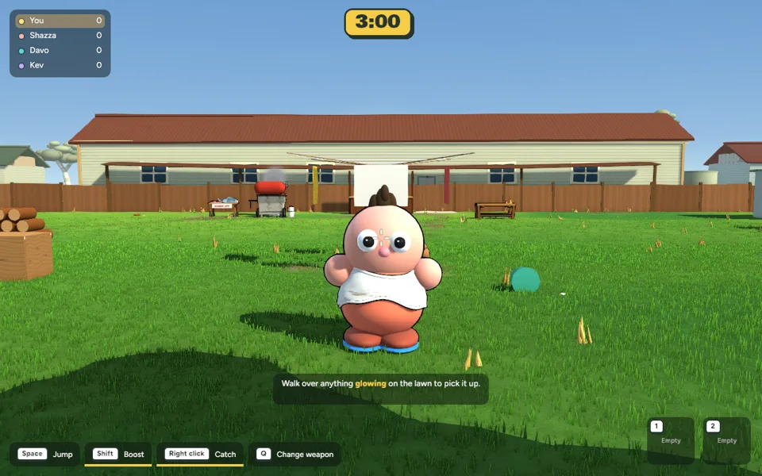
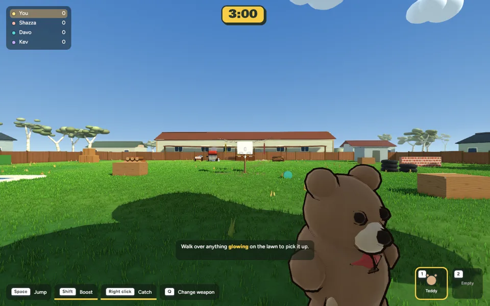

Implemented gameplay recordings · 25 October 2026

The charge pose keeps its momentum after release, then briefly overshoots and settles. Squash fades out while release stretch fades in. This controlled scene uses the real pose and launch systems with scripted input.

Hold longer for more power and up to about 12° of extra launch elevation. The view leans gently by about 4°, with a small settling wobble. The dotted trajectory reflects the actual throw; camera motion does not add a second lift to the projectile. Existing overhold fall remains.
cd /Users/marcus/Claude/australian-bbq/rust ~/.cargo/bin/cargo run -p bbq_app --release -- --menu
Verification, tuning and recovery. Original source files are saved under before/. Nothing committed or pushed.
Try a tap, half charge and full charge at the same aiming angle, then release and watch the return. Close targets now need a slightly lower aim when fully charged.